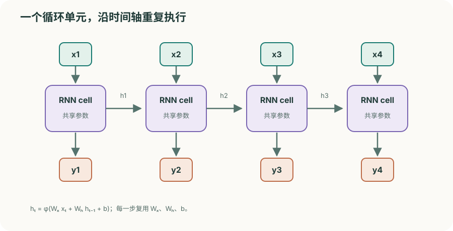
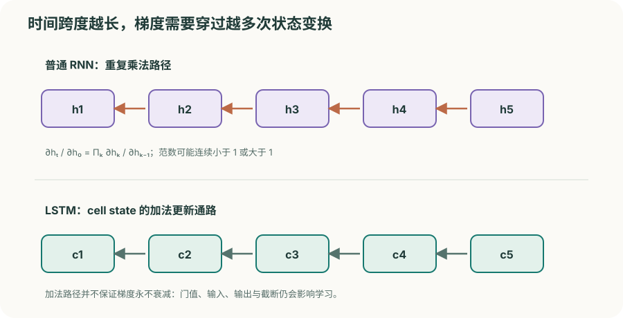
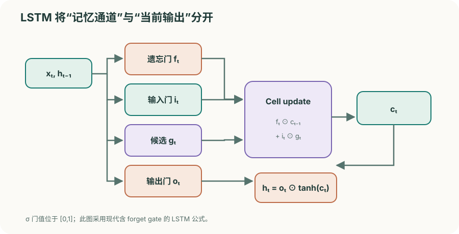
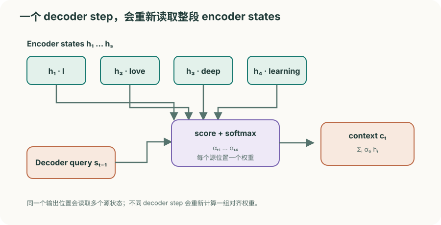

循环神经网络：状态、门控记忆与序列注意力
序列的顺序携带信息。RNN 用共享状态递推处理时间步，LSTM/GRU 通过门控控制记忆流，Seq2Seq 与 Attention 则把输入和输出序列对齐起来。理解反向传播、padding 与 teacher forcing，才能正确使用这些结构。
01 · 序列输入与递归状态
图像常以二维邻域为主要结构，时间序列和文本则有明确顺序。将“我喜欢你”倒序会改变意义；传感器的当前读数也可能依赖前几秒的状态。循环神经网络（RNN）把同一计算单元沿时间轴重复使用，并将上一步隐藏状态传给下一步。

输入通常形状为 [B,T,F]（batch_first=True），其中 B 是批次、T 是序列长度、F 是每步特征数。隐藏状态形状还包含层数和方向数。处理变长序列时，padding 位置不能被误当作真实信息。
import torch
from torch import nn
batch, steps, features, hidden = 3, 7, 5, 11
x = torch.randn(batch, steps, features)
rnn = nn.RNN(features, hidden, batch_first=True)
outputs, h_last = rnn(x)
assert tuple(outputs.shape) == (batch, steps, hidden)
assert tuple(h_last.shape) == (1, batch, hidden)
print("all time steps:", tuple(outputs.shape), "final state:", tuple(h_last.shape))02 · BPTT：梯度穿越时间
训练 RNN 时，损失对早期状态的梯度要沿时间展开图反向传播，这称为时间反向传播（BPTT）。梯度会包含多个时间步雅可比矩阵的连乘：若相关奇异值长期小于 1，梯度可能衰减；若大于 1，梯度可能爆炸。梯度裁剪可以限制一次更新的梯度范数，但不能恢复已经消失的远距离信息，也不能代替合理初始化和模型结构。

实践中还要区分完整 BPTT 与截断 BPTT：长序列训练时常在固定窗口截断梯度，降低内存成本；这会改变跨窗口的梯度传播范围。
import torch
from torch import nn
model = nn.RNN(input_size=4, hidden_size=8, batch_first=True)
optimizer = torch.optim.Adam(model.parameters(), lr=1e-3)
x = torch.randn(6, 20, 4)
target = torch.randn(6, 20, 8)
output, _ = model(x)
loss = (output - target).square().mean()
optimizer.zero_grad()
loss.backward()
norm_before_clip = nn.utils.clip_grad_norm_(model.parameters(), max_norm=1.0)
optimizer.step()
print("loss:", round(loss.item(), 4), "pre-clip norm:", round(norm_before_clip.item(), 4))03 · LSTM：把记忆通道与输出分开
普通 RNN 的状态每步都经过非线性变换，长序列梯度可能难以保留。LSTM 引入 cell state c_t 和门控单元，控制旧记忆保留多少、新信息写入多少、当前对外输出多少。现代常见 LSTM 包含遗忘门、输入门、候选记忆和输出门：

原始 LSTM 论文强调恒定误差流通路；遗忘门是在后续工作中加入的现代常用变体。不要把现代四门公式直接标成 1997 年论文的原始结构。PyTorch 的 nn.LSTM 默认输出包括每个时间步的 hidden sequence，以及最终 hidden 和 cell state。
import torch
from torch import nn
x = torch.randn(4, 9, 6) # [batch, time, input]
lstm = nn.LSTM(input_size=6, hidden_size=10, num_layers=2,
batch_first=True, bidirectional=True)
sequence, (h_n, c_n) = lstm(x)
assert tuple(sequence.shape) == (4, 9, 20)
assert tuple(h_n.shape) == (4, 4, 10) # layers * directions, batch, hidden
assert tuple(c_n.shape) == (4, 4, 10)
print("sequence:", tuple(sequence.shape), "state:", tuple(h_n.shape))04 · GRU：更紧凑的门控递归
GRU 通常使用更新门和重置门，减少显式状态分量与门控参数。一个常见写法为：
不同论文与框架对更新门的定义方向可能不同：有的用 z 混合旧状态，有的用 1−z 混合旧状态。比较公式或手写实现时必须对齐约定，不能只凭“更新门”名称判断。GRU 参数通常更少，但不存在对所有任务都优于 LSTM 的结论。
05 · Seq2Seq：编码器、解码器与 teacher forcing
序列到序列任务把一个输入序列映射为另一个输出序列，例如翻译、摘要和语音识别。编码器产生一串隐藏状态，解码器根据已生成的前缀逐步输出 token。早期 Seq2Seq 将整个输入压缩成单个固定长度向量，长序列容易形成信息瓶颈。
训练时常用 teacher forcing：第 t 步把真实目标 token 作为下一步输入；推理时模型只能使用自己前面生成的 token。两种条件分布不同，会产生 exposure bias。训练与推理的解码流程、起止符、padding 和停止条件必须一致设计。
对变长批次，padding token 不应被当成真实词；损失计算通常忽略 padding 位置，注意力也需要屏蔽无效位置。双向编码器适合离线输入已完整可见的任务；在线流式任务则需考虑未来信息不可用。
06 · Attention：按输出位置读取输入
Attention 不把整句压成一个向量，而是在生成每个目标位置时，重新计算它对源端隐藏状态的关注权重。Bahdanau additive attention 的一个常见形式是：

import torch
batch, target_steps, source_steps, hidden = 2, 3, 4, 8
query = torch.randn(batch, target_steps, hidden)
keys = torch.randn(batch, source_steps, hidden)
values = torch.randn(batch, source_steps, hidden)
scores = torch.matmul(query, keys.transpose(1, 2)) / (hidden ** 0.5)
source_valid = torch.tensor([[1, 1, 1, 0], [1, 1, 0, 0]], dtype=torch.bool)
scores = scores.masked_fill(~source_valid[:, None, :], torch.finfo(scores.dtype).min)
weights = torch.softmax(scores, dim=-1)
context = torch.matmul(weights, values)
assert tuple(context.shape) == (batch, target_steps, hidden)
assert torch.allclose(weights.sum(dim=-1), torch.ones(batch, target_steps))
assert torch.all(weights[0, :, 3] == 0) and torch.all(weights[1, :, 2:] == 0)
print("context:", tuple(context.shape), "masked weights are zero")07 · 循环模型与 Transformer 的边界
RNN/LSTM 按时间步递推，训练时难以并行处理同一条序列的所有位置；Transformer 的自注意力允许训练阶段并行计算多个位置，并直接建立任意位置之间的依赖。但自注意力通常需要构造长度 T×T 的分数矩阵，标准全注意力在序列长度上具有二次计算/存储成本；自回归生成仍然要逐 token 产生后续 token。
因此，“Transformer 完全取代 RNN”不是严谨的工程结论。流式、低延迟、小内存或强时间归纳偏置任务仍可能使用循环、卷积、状态空间或混合架构。选型要看序列长度、在线约束、吞吐、延迟和数据量。
08 · 序列模型的实现检查
- 明确 batch/time/feature 维度，确认
batch_first和双向输出维度。 - 区分 hidden state 与 cell state；不要把现代 LSTM 四门公式误称为原始 1997 结构。
- 对 padding 同时处理 attention mask 与 loss mask；不能只在输入端补零。
- 区分 teacher forcing 训练与自回归推理；检查起始符、终止符和长度上限。
- 梯度裁剪只控制梯度范数，不会修复错误的 mask、状态初始化或截断策略。
序列建模的核心不是“记住一切”，而是设计一条信息可以通过、可以被选择、可以被检验的计算路径。
来源、实现版本与适用边界
下列论文用于核对算法定义与历史主张；API 文档用于核对当前软件行为。图中的张量和数值若未明确引用论文实验，均为构造的教学示例，不代表 benchmark 或生产效果。
- Hochreiter & Schmidhuber (1997), Long Short-Term Memory
- Gers, Schmidhuber & Cummins (2000), Learning to Forget: Continual Prediction with LSTM
- Cho et al. (2014), Learning Phrase Representations using RNN Encoder–Decoder for Statistical Machine Translation
- Bahdanau, Cho & Bengio (2015), Neural Machine Translation by Jointly Learning to Align and Translate
- PyTorch nn.RNN / nn.LSTM API
- Vaswani et al. (2017), Attention Is All You Need
- Deep Learning, Chapter 10: sequence modeling and recurrent neural networks